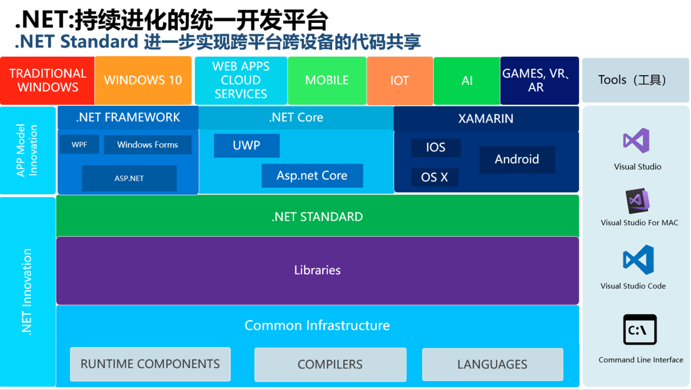
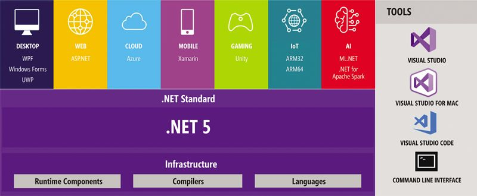
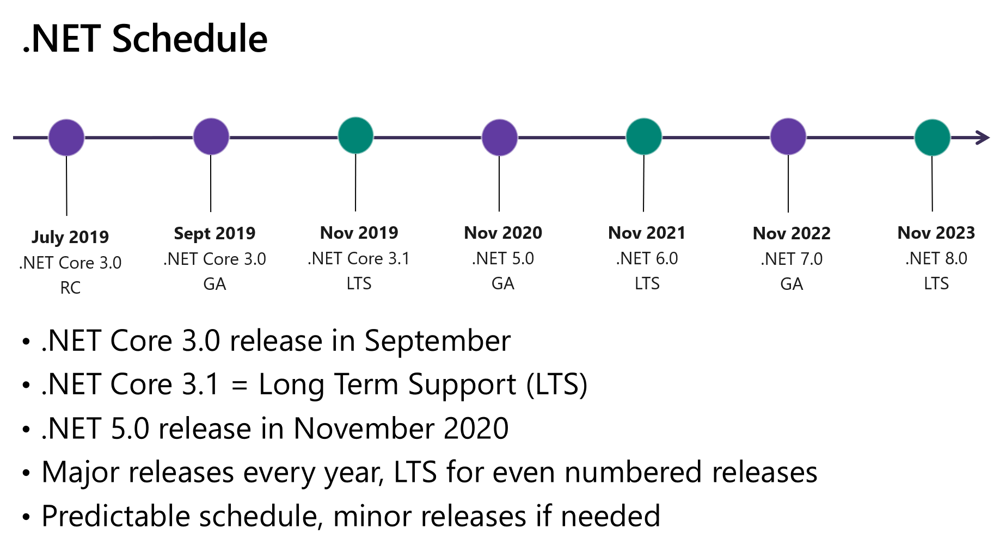

主要是对 .NET Core, .NET Standard, .NET framework 和 Xamarin 的介绍和区分
并且介绍一下其中的ASP.NET, UWP， XAMARIN 等
然后就是 .NET 的未来： .NET 5 （2019年5月宣布的下一代的版本），将把前面这些运行时全部合为一体
以前刚开始听说 .NET 的时候，我只知道 .NET framework , 然后昨天看了一眼官网的 .NET 入门学习的时候吗，又看到了 .NET Core, 然后各种名词接踵而来，有点懵，所以就总结了一下下。
首先就是当下的框架图：

.NET
广义的 .NET 是一个通用的开发平台，能够跨语言，跨平台 ，能够支持跨多个平台的方案
.NET 开发可以实现包括 .NET Framework、.NET Core 和 Mono。 .NET 的所有实现都有一个名为 .NET Standard 的通用 API 规范。
.NET 与 java 对比理解：
.NET 与 java有很多相似的地方，两者都是即时编译语言（JIT）， 项目编译生成的文件不是具体的机器码，而是中间语言。 在java里面叫做字节码（bytecode）， 而在 .NET里面叫做中间语言（Common Intermediate Language，简称 IL），java官方运行环境是java的虚拟机JRE（Java Runtime Environment）， 而在 .NET 官方运行环境叫做公共语言运行时（Common Language Runtime， 简称CLR）
这是 .NET 跨语言，跨平台的基础
跨语言： c#， f#， VB.NET 这些面向 .NET 的都可以
跨平台： 开发 Windows，Linux，macOS，iOS，Android，tvOS，watchOS 和 WebAssembly
.NET framework
传统的 .NET framework 是以一种采用CLR 为基础，支持多种语言（c#，f#，VB.NET, c++，Python等）的开发。 这也是我们用到的最多最熟悉的 .NET , 这个缺点就是不能跨平台，只能在windows上用。一般就是用来做桌面应用程序和ASP.NET的.
.NET Core
主要是针对windows，linux，macOS，服务器和控制台应用程序的跨平台 .NET 实现
它支持四种应用程序：控制台，ASP.NET Core, 云 和通用windows平台( UWP )
需要注意的是: 尽管微软把 .NET Core作为.NET未来的发展方向，但 .NET Core和 .NET Framework 仍然是两个独立的产品。.NET Framework也会继续更新和维护。
.NET Core 不再是windows 专门的，在其他平台也可以用。 就是为了跨平台而做的，不是windows的一个组件了。
.NET Standard
.NET Standard 是一组由.NET 实现的基本的API集。 是一个进一步实现跨平台跨设备的代码共享。其实是未来 .NET的核心，一切基于它来实现代码共享。
.NET Standard 和 .NET 之间 相当于html 规范和 浏览器之间的关系，后者是前者的实现。
Xamarin 与 Mono
Mono是 .NET 开源之前的一个跨平台的方案，是由Xamarin公司主持的开源项目，可以运行于Linux等其他平台 （于2016年被微软收购）。相当于实现了各个平台上的 .NET 的公共语言运行时（CLR）。
现在主要运用在移动设备，许多著名的游戏引擎比如Unity3D也包含着这个技术。
对于IOS和Android 应用程序，Xamarin 将 .NET 技术代入里面， 成为唯一一个能够提供跨iOS，Android和windowsPhone 的单一语言平台。
ASP.NET 和 ASP.NET Core
这两个只是以上框架里的一个小组件，用于开发Web应用程序。
然后两个的区别就是ASP.NET 是 .NET framework 里的组件， 只有windows版本的API
而ASP.NET Core 是 .NET Core 的组件，是对于跨平台准备的，是 ASP.NET 的跨平台版本。
所以说以上这么多的名词，都是因为不断进化产生的，从只有一个 .NET framework 只支持windows平台，到后来的跨平台的方案，都在慢慢发展来的。
三个框架与应用总结
所以再回顾一下上面的那个图片:
现在主要的三个框架实现
.NET Framework （最新到4.8版本）主要是对windows平台的
.NET Core （最新到3.1版本）可以跨平台，主要是一些控制台设备，如linux，windows，macOS等
XAMARIN 主要是针对移动设备的，比如Android，iOS等
官网文档上说的：
There are various implementations of .NET. Each implementation allows .NET code to execute in different places—Linux, macOS, Windows, iOS, Android, and many more.
- .NET Framework is the original implementation of .NET. It supports running websites, services, desktop apps, and more on Windows.
- .NET Core is a cross-platform implementation for running websites, services, and console apps on Windows, Linux, and macOS. .NET Core is open source on GitHub.
- Xamarin/Mono is a .NET implementation for running apps on all the major mobile operating systems, including iOS and Android.
.NET Standard is a formal specification of the APIs that are common across .NET implementations. This allows the same code and libraries to run on different implementations.
.NET 5 未来的展望
现在这么多的框架什么的，到了 .NET5 将会融为一体。
.NET 5 将会融合 .NET Framework , .NET Core, Mono, Xamarin 等优点构建出一个统一的 .NET 平台，开发人员可以使用 C#， VB.NET, F# 等语言，使用相同的API 开发针对任何系统，任何架构，任何形态的应用程序，并且代码和库均可通过 .NET Standard 共享 。
也就是说，到了那个时候开发出一个应用程序，就可以全平台通吃，只要有一个 .NET, 就能一次开发出适用于Windows，Linux，macOS，iOS，Android，tvOS，watchOS 和 WebAssembly 等所有平台的应用程序了。

希望早日到来，让俺们这些开发人员感受感受叭。
2019年5月微软宣布的.NET5， 将会在 2020年11月发布

参考链接：